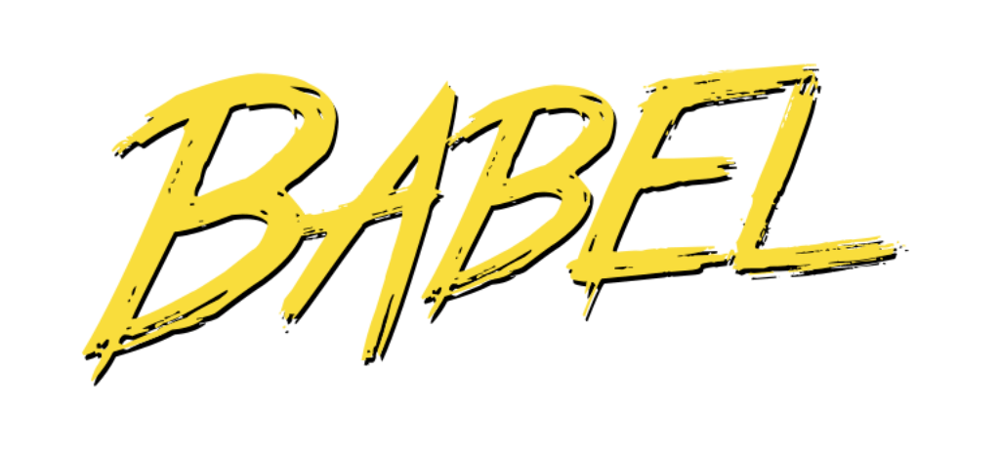

Babel
Babel es una herramienta que nos permite transformar nuestro código JS de última generación (o con funcionalidades extras) a JS que cualquier navegador o versión de Node.js entienda.
Babel funciona mediante plugins para que le indiquemos que cosas queremos que transforme, por ejemplo con el plugin babel-plugin-transform-es2015-arrow-functions podemos decirle que transforme las arrow functions de ECMAScript 2015 a funciones normales, con babel-plugin-transform-react-jsx podemos hacer que entienda código de JSX y lo convierta a código JS normal.
Vamos a ver como instalar y usar Babel en su última versión desde la consola. Para eso necesitamos bajarnos varios módulos de npm: npm i -D babel-core babel-cli